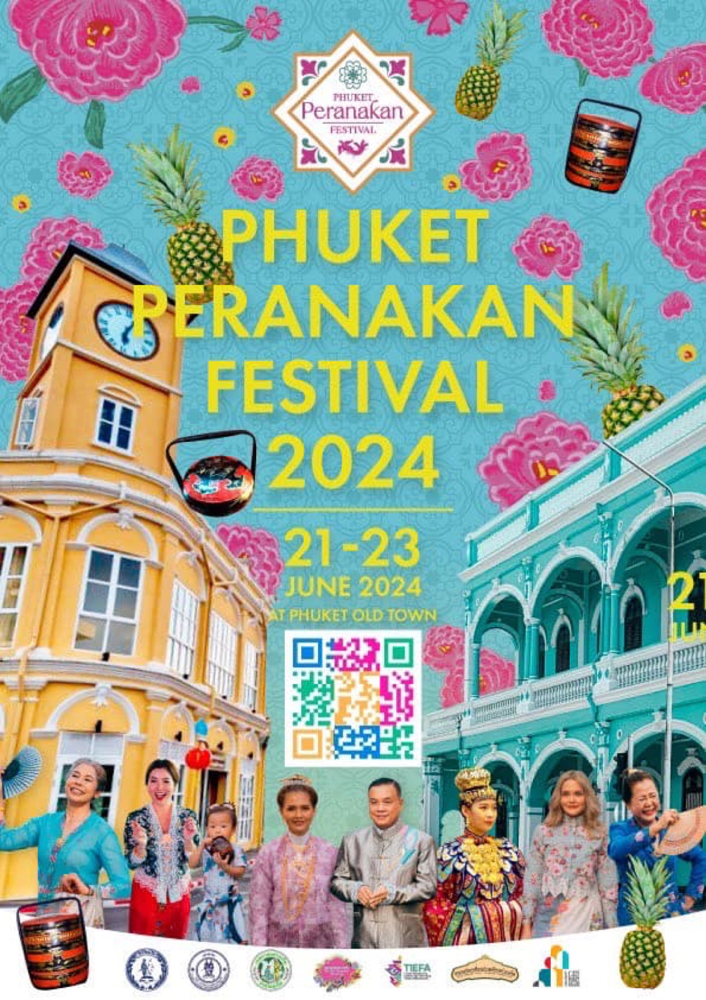

2024 · press · event
Sharing news of the Phuket Peranakan Festival 2024 parade

Original text in Thai
ข่าวประชาสัมพันธ์นะครับ 📢
ชวนชาวภูเก็ตมาร่วมสร้างความภาคภูมิใจกับความสำเร็จในการจัดงานระดับประเทศ
🏮22 มิถุนายนนี้ เวลา 17:00 บนเส้นทางเมืองเก่าภูเก็ต มาเติมยอดมงกุฎให้กับงาน Phuket Peranakan Festival 2024 พบความยิ่งใหญ่จะปรากฏต่อสายตาคนทั่วโลกได้ด้วยความร่วมมือของทุกคน ด้วยขบวนพาเหรดยิ่งใหญ่ตระการตา The City of Well Being Grand Palace 20 ขบวน บนเส้นทางประวัติศาสตร์เมืองเก่าภูเก็ต
📍21 และ 23 มิถุนายน 2567 18:00-19:30 ที่เวทีแยกชาร์เตอร์
ชมการแสดงศิลปะวัฒนธรรมของชาวเพอรานากันจากเอเชียที่งดงาม
ห้ามพลาด! มาชื่นชม และร่วมเป็นหนึ่งในการสร้างตำนานความยิ่งใหญ่อีกครั้ง
ติดตามข้อมูลได้ที่ FB/IG/Tiktok: phuketperanakanfest
สแกนคิวอาร์โค๊ตเพื่อติดตามข่าวสาร
#phuketperanakan #peranakanfestival #phuketperanakanfestival2024 #peranakanfamily
#บ้านอาจ้อ ❤️